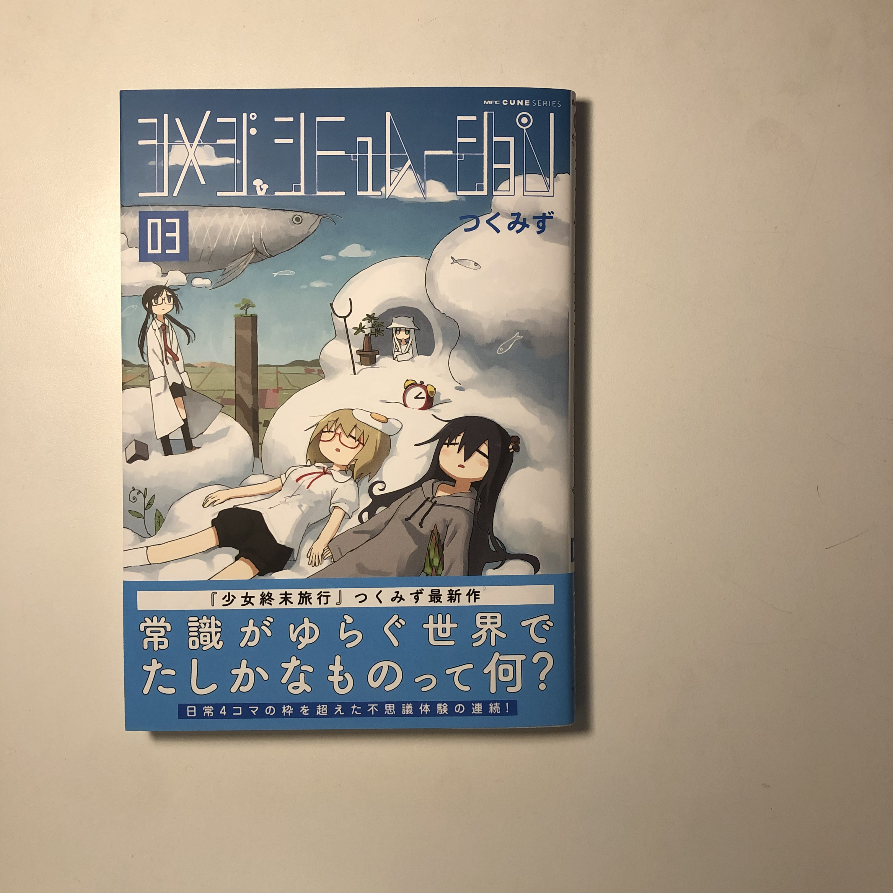

R402
2/2
昨日帰りに眼科画廊行ったがはじめて見た宏美さんの作品がよかった。
いつか画廊で絵を買いたい
ポストカードばかり買っている
新宿でナビ適当に見てときどき無視してたらめちゃ迷ってつかれた
画廊とか作家さんが在廊してるとき落ち着いて見れないので会って話がしたいというときを除いて本人がいないときにこっそり見るのが吉かもしらん
2/3

シメジシュミレーション少しずつ読んでいる
いいな
アルミンレルレルト
アルミンレトルトロ
アルミントロトロトロ
統計の本いい古典を見つけた、生きものがたくさん出てきて楽しい
オカダンゴムシとか、ウナギとか
2/4
お金の申請だるいけど大切だからがんばるしかない
ISS海に沈むのか
そのさまを見たいな
Two exposures so far.
火曜というと、眼科画廊に行った日じゃん。
人を実験してる人は大変そうだなと思う
ちぃ、い、さーいころぉ、わぁー、かぁーみさまがい、てー
何をするにも金金金
2/5
昨日人を殺した夢を見た
二人殺したけど全然知らない人だった気がする。
いつも知らない人だ
殺した後に包丁で顔を十字に斬りつけたような
その後どうしようとりあえず証拠を燃やさないとと思っていたけれどいずれバレるのではないかと不安な気持ちが急激に膨らみ絶望しかけたところで夢が覚めた
夢が覚める直前にこれはもしかして夢であってそうあってほしいと願うことで覚めるような気がするから、もし夢を夢のまま受け入れていたら永遠に夢の中に閉じこめらることになるのだろうか


茶葉買った
いい買い物をした
2/9
何か武器になるような鋭利な自己同一性がほしい。
だめだ。
有名人になろう委員会。
2/11
ワクチン
以前母の話で、大学生のころ祖父の何かがどうにも気に入らずとうとう祖父に対して手紙を書いて渡したと言っていたが、僕も昔それと全く同じことをしていたと思い出した。
ひぐらし全部読了したかも
あ
あ
どうしよう
ああ
ああああああああああ
2/12
熱に浮かされて進路のこととか急に調べ出した
未来はあまり明るくはないのかな
世の中で未来に絶対の信頼を置いている人などどのくらいいるだろう
優秀なら残れるし、幸せになれる
優秀とはなんなのか
幸せとはなんなのか
企業を調べてみたけれどあまりよさそうなものはない
自分のやりたいことをとるか、生活の安定をとるか
ネットで言う不安定不安定って、どういうことなのか
任期があるということか
でも同じ職場に縛りつけられているのもあまりいいとは言えない気もする
嫌になったら簡単にやめれないし
お金のこと考えると底が深すぎて分からない
よくわからない
やりたいことを棄てて、金稼ぎをするのか
金稼ぎができれば趣味は充実する
けどやりたくないことばかりでつらいのか
生活ありきの仕事なのか
仕事ありきの生活なのか
僕の場合後者かもしれない
仕事を仕事としてほとんど感じなければ、あるいは自分の生きる意味が仕事であれば、それは何よりのこと
ただ、自分にとって最低限よりちょっと過剰くらいの生活がついてくることも同じくらい大事、だろうか
どちらが先かということよりも、これらは生きる上で決して切り離せない関係
一つに溶けあって、先も後も、表も裏もない、
ただそれがそれとして、
一つのものとして存在する観念
むずかしい世界だ
2/14
いろいろ人に気をつかうことが増えてきたな
今日は人の話に付き合っていたら帰りが遅くなってしまった
あと自転車の空気がおかしいことになって遅くなってしまった
人の話をつい聞いていて予定が延びてしまったときとかにいらいらしないようにしたい
自分の落ち度というわけではないので、こちらの心にも余裕があるはず
自転車にもいらいらしないようにしたい
2/15
パンクしてた、f.
今日も人の話を聞いてあげていた気がする
だべる時間とかがあると思い返してあーもうロスだったとか思うのよくないのかも
コミュニケーション大事だしな
2/20
バイトの昇給交渉チャレンジしてみるか
大して実績もないけれど。
僕も170cmとか全然無いのだけれど世の中にはいろんな人がいてしょうがないからそれを馬鹿にされても仕方ないかな気にしないで無視していようくらいにしか思わないな
配信聞いていた訳でもないし、直接面と向かって言われたわけでも無いから憤りがないのかもしれないが
もう十分制裁を受けている人に対してどこからともなく現れて更に制裁を加えようとする顔の無い人々がいるからネットは恐ろしいと思う
それで当人が自殺したりするのを見てにたにたするのだろうか
どこでどのような間違いを犯すのか自分も分からないからなるべく他人の過ちも許せるようになりたい
許せるようにというか、人が追い詰められるさまを肴に愉悦に浸るようなことをしたくない
たしかに邪悪な気持ちが自分の中に宿っていることも認識した上でそう思う。
善人になるつもりはないけど。
たしかに攻撃することはまあしょうがないにしても自分が絶対の安全地帯にいることをわかった上で無防備な相手を痛めつけるのはフェアじゃないというか
結局生き方に対する美学のような、好みのような問題に行きついてしまうのだけれど、
とにかくそういうことをしたくないと思った。
そもそも漫画等でかなり辛辣な物言いがむしろキャラの魅力として根づいてしまった文化があるからそれを絶対的にいいものと考えて現実でもやってしまう人が出てくるのはあるまじきことである反面仕方ないことのような気もするしそのような表現を虚構では好んで享受している人々こそが今回のような件で面白半分に過剰に反応しているようなこともあるのではないかと思う。
2/28
久しぶりに日の沈む前にラボを出た。
戦争が始まってから胸のあたりにずっと靄がかかっているような感じだ。
戦争が始まって日本もなんとか自衛権だとかなんかでどこかで戦ったりして標的にされて空襲されたりしてみんな死んだら
死ぬのだとしたら、
今生きている意味ってなんだろう
とずっと考えている。
戦争があってもなくても、いずれにせよ人は死ぬのだけれど、
この感じはなんだろう
死が生の結果であり、目的論的、結果主義というか、
行き着く先に待ち受けているものが全てを決定していると考えていると、
何もかもどうでもよくなってしまう
どうせみんな死ぬんだと考えていると気が楽になることはあるけれど、それも相対的なもので、
底なしの絶望でしかないときもある。
生まれたときから死を意識する人間はたぶんいない
死ぬために生きると思って産まれてくる人間はたぶんいない
死がいざ現実的なものとして、
少し遠くの方、丘の向こうにうっすらとその輪郭を顕してくるだけで、
恐怖がゆらりとこうべをもたげる。
死にたくないな
ネットを見ていて、今回の件で人々がいろんなことを言っているのを見て、ほんとうに基本的なこと、重要な部分で皆が共有していると思われることがらでさえ、自分と全く異なる意見をもつ人々が大勢いるのだと初めて気づいたような気がする。
なので、自分がたった一人何か声をあげたとしても、それで社会全体の意思が影響を受けるかというと、
そんなことはまったく無いのだと思う。
なので、日本が戦争を始めることになったとしても、それでも最後には、しょうがないと思いたい。
とはいえ、できる限りのことはしたいけれど。
高校の恩師が以前、
組織の仕組みを変えるより自分を変えていく方が楽だというようなことを言っていたのを思い出した
教育委員会にプロジェクターが必要だとかなんとか言ったけれど通らず、結局自分で買って好き勝手授業していたというだけの話だった気がするが。
Life is very short, and there’s no time.
自分を変える方が楽だというのは、折れて自分の信念を曲げるというネガティブな意味合いよりは、
与えられた環境で自分なりに足掻いていくという反骨精神的な意味合いだと思う
いつか死ぬと書いたけれど、技術が発達して意識が身体と切り離せるようになったら、
死は終焉を迎えるかもしれない
Billie Irishの歌で、何百年か先にはどうなるかねみたいなことを彼女がさらっと歌っていた
それはそれで恐ろしい
死ねないというのがどういう状態を指すのか未知の部分もあるし、
死にたくないから死なないでいるというのであればいいのだけれど、
死が許されないということであれば地獄かも
しかもそれに本人は気づいていないというか、
本当は死が安らぎであるのに、それに気づかずに、気づかされずに永遠の生を手繰っている
のは恐ろしいな、とも思う
けど現状それはないので、死にたくない
I don't wanna f die!
なのでとにかくみんながおかしくなって戦争を始めだしたら、自分のコミュニティとか全部見捨ててとにかく逃げようと思う
それにやっぱり、
どこかでたくさんの誰かが望まぬ死を迎えている状況で過ごしたくない
ある意味
目と耳を閉ざしていれば世界のどこかで人が大量に虐殺されていようがいまいが、
今日この日の自分の生活には何の影響もないかもしれない
ネットを見ていると
たしかにそういう人たちもいるような気がして
無関心なのか、意識的にそうしているのかわからないけれど、
普段通りの日常を生きているような感じだっだった
はじめはなんでそんなに無関心でいられるのか、冷酷な連中だと思ったけれど、
普段通りに過ごすというのも大事なことかもしれない
自分にできることはたかがしれているので。
あまりネットとつながりすぎるのはよくないかもしれない
他人の問題とかが自分の問題のようになってしまうことがあるので。
ネットがあって人々の世界とのつながりが増えたかというと、でもそうでもないような気もする。
多様化が進むことで、人々が互いにかみ合うことがなくなってきているというか、
なんだろうか
各個人がそれぞれ自分だけの世界に閉じこもれるようなになっている気もする。
そうでもないか。
3/1
Sleep, a poor man’s dinner.
3/2
揚げなすぼけなすおたんこなす
人のために時間を割いていたらまたとんでもない時間になった
予定をいつもぎちぎちにしてしまっているから少しでも予期せぬ事態が起こるとすぐ崩壊する
予定を無理やり通そうとするのがいけないのかもしれないが、考えていた予定をやめてしまうと、たとえば今朝がんばって早起きしたのは何のためだったのかと思ってしまう。
誰かのために善意で自分の時間を犠牲にすることにまだ抵抗があるかもしれない
今日とか犠牲にして大変なことになったし
ああああああ
その人のせいではないのだけれど、あーもう、といつも後悔している気がする
自分を中心に世界が回っているわけではないからしょうがない
もう寝るか